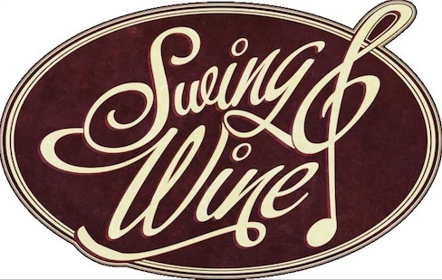

Jeden Donnerstag im [qype id=“39742″], Berlin – jeden Donnerstag mit einem anderen Thema!
1. Donnerstage: Live Band + DJ und kostenlose Vorstellung des monatlichen Weinprogrammes des Frannz! Eintritt liegt um 10,- Euro, das hängt auch immer etwas von der jeweiligen Band ab.
2. Donnerstage: Social Dance mit einem DJ, der auch Balboa kompatible Musik spielt. Eintritt: 5,- Euro + kostenlose Weinprobe aus dem monatlichen Programm.
3. Donnerstage: Swingin‘ Swanee’s Swing Special – An diesen Abenden erzählt DJ Swingin‘ Swanee Geschichten aus der Swing Welt! Inhalte sind zum Beispiel Big Bands oder Ballrooms! Eintritt: 5,- Euro + kostenlose Weinprobe aus dem monatlichen Programm.
4. Donnerstage: An diesen Donnerstagen wird es etwas ruhiger! Das Team von Blues Berlin erfreut uns mit Blues Musik und Blues Tanz Teasern. Eintritt: 5,- Euro + kostenlose Weinprobe aus dem monatlichen Programm.
5. Donnerstage: Sollte es einen 5. Donnerstag im Monat geben, werden wir diesen interessanten Dingen rund um Swing und Wein widmen. Seid gespannt! Eintritt: 5,- Euro + kostenlose Weinprobe aus dem monatlichen Programm.
Eine der besten und auch größten Tanzflächen in Berlin + super Athmosphäre + immer wechselnde DJ´s + Weingenuss! Wer hungrig ist, findet auch immer eine gute Auswahl verschiedenster Speisen in der Karte des Frannz Restaurant!
http://www.facebook.com/swingandwine

{kind=link}